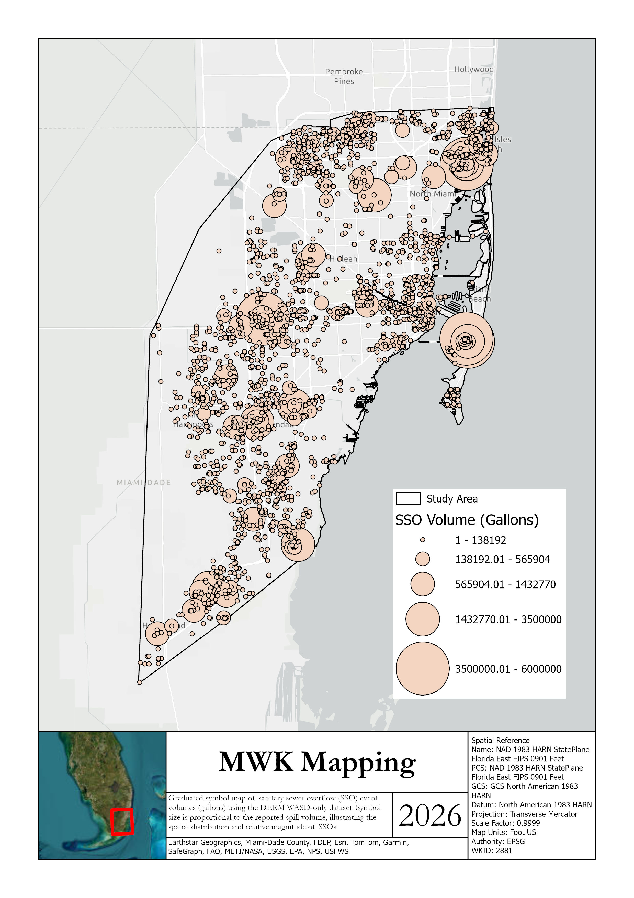

Miami Waterkeeper GIS & Data Analysis
Project Overview
In this project, I worked with Miami Waterkeeper to analyze historical sanitary sewer overflow and wastewater infrastructure data across Miami-Dade County. The project involved compiling, cleaning, and organizing environmental and spatial datasets from multiple sources and transforming them into maps and analytical products that could be used to better understand patterns in sewage spills and wastewater infrastructure.
Using GIS, RStudio, and spatial data analysis, I evaluated the geographic and temporal distribution of sewer overflow events and developed visualizations that placed individual incidents within a broader environmental and regulatory context. The resulting products helped convert large and complex datasets into clear, interpretable information for research, communication, and organizational decision-making.
Background
Sanitary sewer overflows can discharge untreated or partially treated wastewater into streets, canals, waterways, and surrounding environments. Historical records of these events contain valuable information about where spills occur, how frequently they occur, and how wastewater-related issues may change over time.
However, these records often exist across multiple datasets, formats, and geographic sources. Integrating these datasets within a GIS environment provides a way to examine individual incidents in relation to surrounding infrastructure, waterways, regulatory areas, and broader spatial patterns throughout Miami-Dade County.
Scenario
Miami Waterkeeper sought to better organize and interpret historical wastewater and sewer overflow information in order to understand several important questions:
- Where have sanitary sewer overflows occurred throughout Miami-Dade County?
- How have the frequency and distribution of reported spills changed through time?
- Are certain geographic areas repeatedly associated with wastewater incidents?
- How do reported spills relate spatially to wastewater infrastructure and regulatory areas?
- How can complex wastewater datasets be communicated clearly through maps and visualizations?
By compiling the available data and translating it into spatially explicit analytical products, the project provided a clearer framework for examining wastewater issues across the county.
Objective
The primary objective of this analysis was to integrate historical wastewater and spatial datasets in order to:
- Compile and clean historical sanitary sewer overflow records
- Map the geographic distribution of reported sewer overflow events
- Evaluate temporal and spatial patterns within the historical dataset
- Compare spill locations with relevant infrastructure and regulatory information
- Develop clear maps and visualizations for technical and non-technical audiences
Ultimately, the analysis was designed to provide Miami Waterkeeper with organized datasets and visual products that could support research, communication, outreach, and future environmental investigations.
Results Summary
Spatial Distribution of Sewer Overflows
Historical sanitary sewer overflow records were mapped across Miami-Dade County to visualize the geographic distribution of reported incidents. Converting the historical records into a spatial dataset allowed individual events to be examined within the broader landscape and made geographic patterns easier to identify than from tabular data alone.

Historical Spill Trends
Organizing sewer overflow records through time allowed historical changes in spill occurrence and distribution to be evaluated. This temporal perspective helped distinguish individual events from longer-term patterns and provided additional context for understanding how reported wastewater incidents have changed across the historical record.
Additional analysis of event frequency, spill magnitude, or other available metrics can help identify periods of elevated wastewater activity and provide context for interpreting changing infrastructure and management conditions.

Infrastructure & Regulatory Context
Spatial analysis allowed reported sewer overflow locations to be compared with wastewater infrastructure and regulatory information. Placing spill records within this broader geographic framework provided additional context for understanding where incidents occurred and how they relate to the systems and management areas surrounding them.
The resulting GIS products transformed complex wastewater datasets into accessible visual information that could support additional investigation, stakeholder communication, and future spatial analyses.